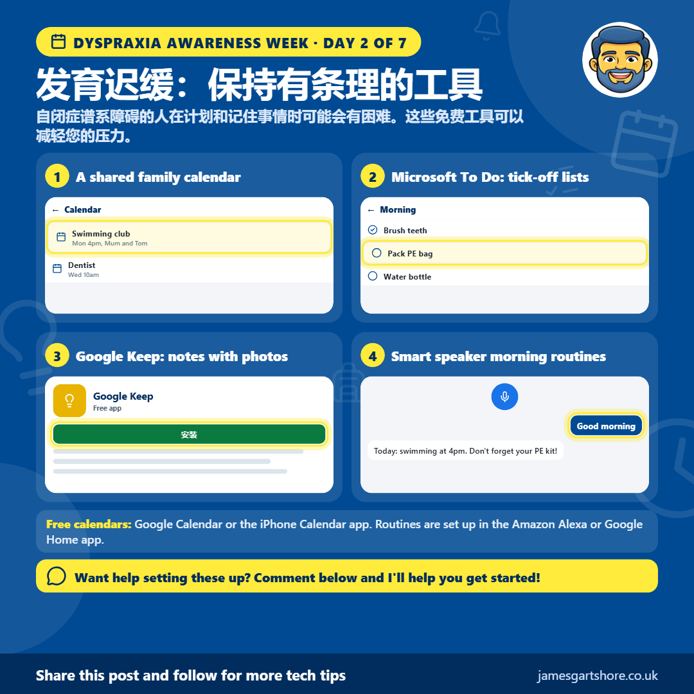
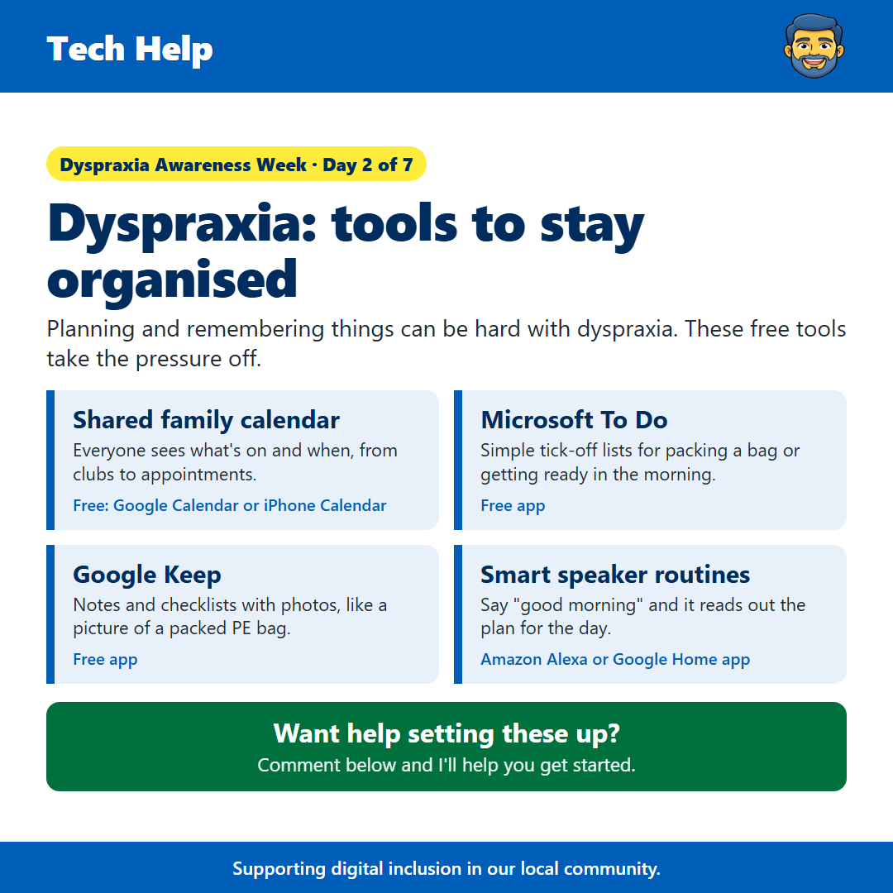

Dyspraxia Day 2
由 James Gartshore · · 健康与福祉
See the old version of this poster

Download the old version大家好，今天是自运动障碍意识周的第二天，今天我想分享一些能帮助大家保持有条理的免费工具。
自运动障碍不仅仅影响运动和协调。它也可能让孩子们和大人在计划、记住事情和记时间方面更困难。好消息是，您的手机可以减轻很多这种压力。
一个共享的家庭日历是很好的起点。Google Calendar 或 iPhone 上的日历应用，您可以创建一个全家人都能看到的日历，这样每个人都知道发生了什么以及什么时候发生，从放学后的社团活动到牙医预约。您还可以为每个活动添加提醒，这样就不用每个人都依赖记忆了。
对于日常的例行公事，像 Microsoft To Do 这样的简单清单应用真的很有帮助。您可以为打包书包或早上准备等事情创建清单，然后边做边打勾。它是免费的，看到所有事情都打勾感觉很棒。
Google Keep 也是一个很棒的免费应用，非常适合清单，因为您可以在笔记中添加照片。比如一个装满体育用品的包的照片，会让您非常容易检查是否忘记了任何东西，特别是对于那些觉得书面清单更困难的小朋友来说。
如果您有 Amazon Echo 或 Google 扬声器，您也可以设置例程。您选择一个短语，比如“早上好”，扬声器就可以一次读出天气、日历上的事情以及当天的任何提醒。
如果你想让我帮你设置这些功能，只需给我发条消息，我会尽我所能帮助你。
希望这能帮到你，如果你觉得有用，也请分享给任何可能觉得它有用的朋友。